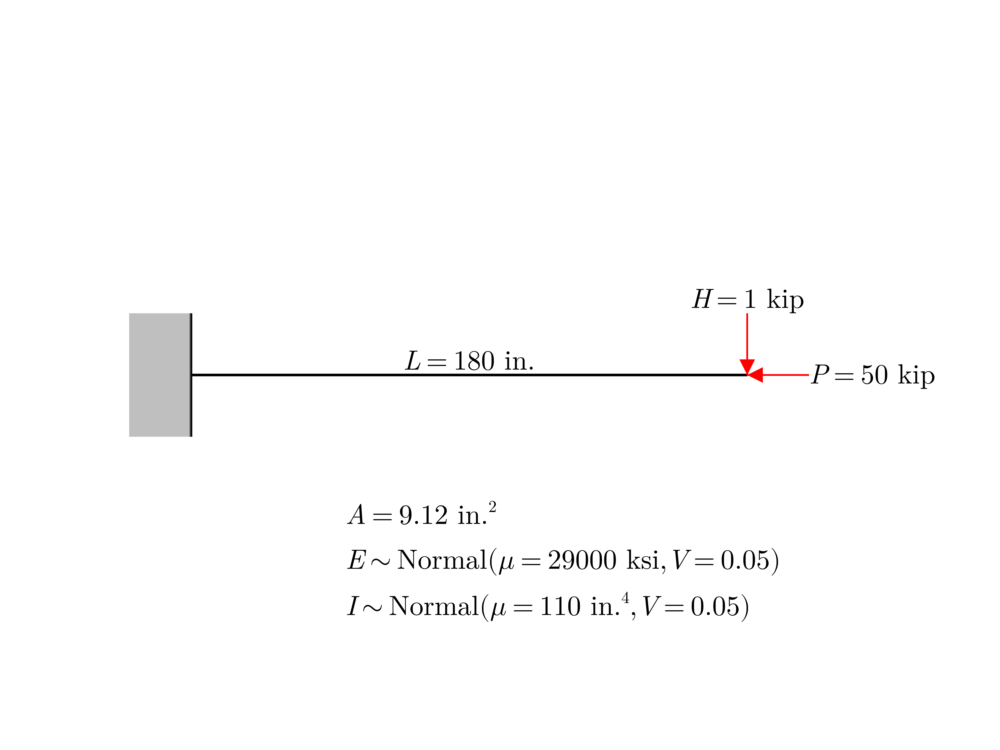
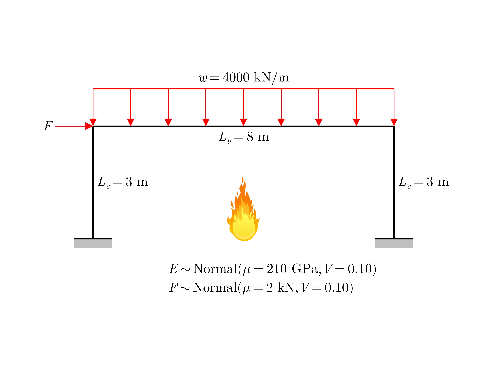

Advanced Usage
"Internal" Finite Element Models
The real power of Fortuna.jl package comes from the ability to define limit state functions using finite element (FE) models of complex systems. For example, if the roof drift of a frame subjected to wind loads $\Delta$ must not exceed a certain limit $\Delta_{0}$, then the limit state function is given by $g(\vec{X}) = \Delta_{0} - \Delta(\vec{X})$, where $\Delta$ must be computed from the FE model of this frame with a proper consideration of all random variables involved in the problem formulation $\vec{X}$.
Fortuna.jl package allows you to easily solve reliability problems for FE models built using any Julia package with such capabilities, e.g., InstantFrame.jl and ONSAS.jl packages for structural system problems, PowerSystems.jl package for power system problems, Gridap.jl package for more general FE problems, and many more. Moreover, thanks to the great Julia-to-Python infrastructure developed by the JuliaPy organization, you can also build FE models using Python packages with such capabilities. The most prominent example of such Python package is, of course, OpenSeesPy which serves as the standard to simulate the performance of structural and geotechnical systems subjected to earthquakes.
Julia-Based FE Models: InstantFrame.jl
Installation
To install InstantFrame.jl package, type ] in Julia REPL to enter the built-in Julia package manager and execute the following command:
pkg> add InstantFrameExample
Consider a cantilever beam subjected to simultaneous axial and transverse loading based on the example provided in Denavit and Hajjar (2013) with the only difference that Young's modulus $E = X_{1}$ and moment of inertia about major axis $I = X_{2}$ are uncorrelated normally-distributed random variables. The cross-sectional area of the beam $A$ is $9.12 \text{ in.}^{2}$.
Let's define the limit state function as
\[g(\vec{X}) = \Delta_{0} - \Delta(\vec{X})\]
where $\Delta(\vec{X})$ is the downward deflection at the free end of the beam, which must not exceed the deflection limit $\Delta_{0}$ of $1 \text{ in.}$. The goal of this example is to find the reliability indices $\beta$ and probabilities of failure $P_{f}$ using First- and Second-Order Reliability Methods.
# Preamble:
using Fortuna
using InstantFrame
# Define the random variables:
X₁ = randomvariable("Normal", "M", [29000, 0.05 * 29000]) # Young's modulus
X₂ = randomvariable("Normal", "M", [ 110, 0.05 * 110]) # Moment of inertia about major-axis
X = [X₁, X₂]
# Define the correlation matrix:
ρˣ = [1 0; 0 1]
# Define the FE model of the cantilever beam:
function CantileverBeam(x::Vector)
# Define the material properties:
Material = InstantFrame.Material(
names = ["Steel"],
E = [x[1]],
ν = [0.3],
ρ = [0])
# Define the cross-sectional properties:
CrossSection = InstantFrame.CrossSection(
names = ["Beam"],
A = [9.12],
Iy = [0],
Iz = [x[2]],
J = [0])
# Define the element-to-element connections:
Connection = InstantFrame.Connection(
names = ["Rigid"],
stiffness = (ux = [Inf], uy = [Inf], uz = [Inf], rx = [Inf], ry = [Inf], rz = [Inf]))
# Define the nodes:
Node = InstantFrame.Node(
numbers = 1:11,
coordinates = [
( 0, 0, 0),
( 18, 0, 0),
( 36, 0, 0),
( 54, 0, 0),
( 72, 0, 0),
( 90, 0, 0),
(108, 0, 0),
(126, 0, 0),
(144, 0, 0),
(162, 0, 0),
(180, 0, 0)])
# Define the elements:
Element = InstantFrame.Element(
types = ["", "", "", "", "", "", "", "", "", ""],
numbers = 1:10,
nodes = [
( 1, 2),
( 2, 3),
( 3, 4),
( 4, 5),
( 5, 6),
( 6, 7),
( 7, 8),
( 8, 9),
( 9, 10),
(10, 11)],
orientation = [0, 0, 0, 0, 0, 0, 0, 0, 0, 0],
connections = [
("Rigid", "Rigid"),
("Rigid", "Rigid"),
("Rigid", "Rigid"),
("Rigid", "Rigid"),
("Rigid", "Rigid"),
("Rigid", "Rigid"),
("Rigid", "Rigid"),
("Rigid", "Rigid"),
("Rigid", "Rigid"),
("Rigid", "Rigid")],
cross_section = [ "Beam", "Beam", "Beam", "Beam", "Beam", "Beam", "Beam", "Beam", "Beam", "Beam"],
material = ["Steel", "Steel", "Steel", "Steel", "Steel", "Steel", "Steel", "Steel", "Steel", "Steel"])
# Define the boundary conditions:
Support = InstantFrame.Support(
nodes = 1:11,
stiffness = (
uX = [Inf, 0, 0, 0, 0, 0, 0, 0, 0, 0, 0],
uY = [Inf, 0, 0, 0, 0, 0, 0, 0, 0, 0, 0],
uZ = [Inf, Inf, Inf, Inf, Inf, Inf, Inf, Inf, Inf, Inf, Inf],
rX = [Inf, Inf, Inf, Inf, Inf, Inf, Inf, Inf, Inf, Inf, Inf],
rY = [Inf, Inf, Inf, Inf, Inf, Inf, Inf, Inf, Inf, Inf, Inf],
rZ = [Inf, 0, 0, 0, 0, 0, 0, 0, 0, 0, 0]))
# Define the distributed loads:
UniformLoad = InstantFrame.UniformLoad(nothing)
# Define the concentrated loads:
PointLoad = InstantFrame.PointLoad(
labels = [""],
nodes = [11],
magnitudes = (FX = [-50], FY = [-1], FZ = [0], MX = [0], MY = [0], MZ = [0]))
# Solve:
Model = InstantFrame.solve(Node, CrossSection, Material, Connection, Element, Support, UniformLoad, PointLoad, analysis_type = "second order", solution_tolerance = 1E-6)
# Get the vertical displacement at the free end:
Δ = -Model.solution.displacements[11][2]
return Δ
end
# Define the limit state function:
g(x::Vector) = 1 - CantileverBeam(x)
# Define the reliability problem:
Problem = ReliabilityProblem(X, ρˣ, g)
# Perform the reliability analysis using the FORM:
FORMSolution = solve(Problem, FORM(), diff = :numeric)
println("FORM:")
println("β: $(FORMSolution.β)")
println("PoF: $(FORMSolution.PoF)")
# Perform the reliability analysis using the SORM:
SORMSolution = solve(Problem, SORM(), FORMSolution = FORMSolution, diff = :numeric)
println("SORM:")
println("β: $(SORMSolution.β₂[1]) (Hohenbichler and Rackwitz)")
println("β: $(SORMSolution.β₂[2]) (Breitung)")
println("PoF: $(SORMSolution.PoF₂[1]) (Hohenbichler and Rackwitz)")
println("PoF: $(SORMSolution.PoF₂[2]) (Breitung)")┌ Warning: Solving Linear System A::Matrix{Float64} x::StaticArraysCore.SVector{30, Float64} = b::StaticArraysCore.SVector{30, Float64} is not properly supported. Converting `x` to a mutable array. Check the return type of the nonlinear function provided for optimal performance.
└ @ NonlinearSolve ~/.julia/packages/NonlinearSolve/R4GRC/src/internal/linear_solve.jl:59
FORM:
β: 2.778812477316028
PoF: 0.0027279005403556024
┌ Warning: Solving Linear System A::Matrix{Float64} x::StaticArraysCore.SVector{30, Float64} = b::StaticArraysCore.SVector{30, Float64} is not properly supported. Converting `x` to a mutable array. Check the return type of the nonlinear function provided for optimal performance.
└ @ NonlinearSolve ~/.julia/packages/NonlinearSolve/R4GRC/src/internal/linear_solve.jl:59
SORM:
β: 2.757857066145941 (Hohenbichler and Rackwitz)
β: 2.76002459211157 (Breitung)
PoF: 0.0029090816006080854 (Hohenbichler and Rackwitz)
PoF: 0.0028898505306156133 (Breitung)Observe that diff = :numeric keyword argument was used in solve() function. This forces Fortuna.jl package to use numerical differentiation to evaluate the gradients and Hessians of the limit state function since the finite element (FE) model of the cantilever beam, defined using InstantFrame.jl package, is not automatically differentiable. Note that you would still obtain a solution if you didn't use diff = :numeric keyword argument, but each time Fortuna.jl package needs to differentiate the limit state function, it would (1) attempt to differentiate it automatically, and after it fails, (2) it would differentiate it numerically, significantly slowing down the reliability analysis.
Python-Based FE Models: OpenSeesPy
Installation
To be able to work with OpenSeesPy package directly from Julia you need to install two packages that allow Julia to talk to Python:
| Package | Description |
|---|---|
PyCall.jl | Let's you call Python functions directly from Julia |
Conda.jl | Let's you install Python packages from conda and pip package managers that can be then called directly from Julia using PyCall.jl package |
To install PyCall.jl and Conda.jl packages, type ] in Julia REPL to enter the built-in Julia package manager and execute the following command:
pkg> add PyCall CondaNow you need to install OpenSeesPy package through Conda.jl package. To do that, run the following commands in Julia REPL:
using Conda
Conda.pip_interop(true) # Activate "pip"
Conda.pip("install", "openseespy") # Install OpenSeesPy using "pip"Now you can work with OpenSeesPy package directly from Julia!
If you are experiencing any problems installing OpenSeesPy package please refer to Conda.jl package's documentation.
Example
Let's solve previously defined problem using OpenSeesPy package.
# Preamble:
using Fortuna
using PyCall
# Load OpenSeesPy package:
ops = pyimport("openseespy.opensees")
# Define the random variables:
X₁ = randomvariable("Normal", "M", [29000, 0.05 * 29000]) # Young's modulus
X₂ = randomvariable("Normal", "M", [ 110, 0.05 * 110]) # Moment of inertia about major axis
X = [X₁, X₂]
# Define the correlation matrix:
ρˣ = [1 0; 0 1]
# Define the FE model of the cantilever beam:
function CantileverBeam(x::Vector)
# Remove any previous models:
ops.wipe()
# Define the model parameters:
ops.model("basic", "-ndm", 2, "-ndf", 3)
# Define the nodes:
ops.node( 1, 0, 0)
ops.node( 2, 18, 0)
ops.node( 3, 36, 0)
ops.node( 4, 54, 0)
ops.node( 5, 72, 0)
ops.node( 6, 90, 0)
ops.node( 7, 108, 0)
ops.node( 8, 126, 0)
ops.node( 9, 144, 0)
ops.node(10, 162, 0)
ops.node(11, 180, 0)
# Define the boundary conditions:
ops.fix(1, 1, 1, 1)
# Define the cross-sectional properties:
A = 9.12
ops.section("Elastic", 1, x[1], A, x[2])
# Define the transformation:
ops.geomTransf("PDelta", 1)
# Define the elements:
ops.element("elasticBeamColumn", 1, 1, 2, 1, 1)
ops.element("elasticBeamColumn", 2, 2, 3, 1, 1)
ops.element("elasticBeamColumn", 3, 3, 4, 1, 1)
ops.element("elasticBeamColumn", 4, 4, 5, 1, 1)
ops.element("elasticBeamColumn", 5, 5, 6, 1, 1)
ops.element("elasticBeamColumn", 6, 6, 7, 1, 1)
ops.element("elasticBeamColumn", 7, 7, 8, 1, 1)
ops.element("elasticBeamColumn", 8, 8, 9, 1, 1)
ops.element("elasticBeamColumn", 9, 9, 10, 1, 1)
ops.element("elasticBeamColumn", 10, 10, 11, 1, 1)
# Define the loads:
ops.timeSeries("Linear", 1)
ops.pattern("Plain", 1, 1)
ops.load(11, 0, -1, 0)
ops.load(11, -50, 0, 0)
# Define the solver parameters:
ops.system("BandSPD")
ops.numberer("RCM")
ops.constraints("Plain")
ops.algorithm("Linear")
# Solve:
ops.integrator("LoadControl", 0.01)
ops.analysis("Static")
ops.analyze(100)
# Get the vertical displacement at the free end:
Δ = -ops.nodeDisp(11, 2)
# Return the result:
return Δ
end
# Define the limit state function:
g(x::Vector) = 1 - CantileverBeam(x)
# Define the reliability problem:
Problem = ReliabilityProblem(X, ρˣ, g)
# Perform the reliability analysis using the FORM:
FORMSolution = solve(Problem, FORM(), diff = :numeric)
println("FORM:")
println("β: $(FORMSolution.β)")
println("PoF: $(FORMSolution.PoF)")
# Perform the reliability analysis using the SORM:
SORMSolution = solve(Problem, SORM(), FORMSolution = FORMSolution, diff = :numeric)
println("SORM:")
println("β: $(SORMSolution.β₂[1]) (Hohenbichler and Rackwitz)")
println("β: $(SORMSolution.β₂[2]) (Breitung)")
println("PoF: $(SORMSolution.PoF₂[1]) (Hohenbichler and Rackwitz)")
println("PoF: $(SORMSolution.PoF₂[2]) (Breitung)")FORM:
β: 2.8174295342638143
PoF: 0.002420486801646781
SORM:
β: 2.7964225995564593 (Hohenbichler and Rackwitz)
β: 2.7985512087326656 (Breitung)
PoF: 0.0025835893047366763 (Hohenbichler and Rackwitz)
PoF: 0.0025666214553221878 (Breitung)"External" Finite Element Models
Besides being able to define limit state functions using FE models of complex systems using Julia- and Python-based FE softwares, it also possible to define FE models using external FE software, most notably Tcl-based OpenSees, Abaqus, and SAFIR.
In general, the following approach is taken to solve reliability problems involving FE models built using OpenSees, Abaqus, and SAFIR softwares in Fortuna.jl packages:
- Input files describing the models are created:
.tclin case ofOpenSees,.inpin case ofAbaqus,.inin case ofSAFIR. The random variables involved in the definition of a model are defined using unique "placeholders" in model's input file. These "placeholders" are then used to inject samples of corresponding random variables to create executable files. For example, "placeholder" for Young's modulus in the definition of a FE model built usingAbaqusmay look like:Ebecause:symbol generally does not appear in.inpfiles; thus, the section describing the material properties of a model in the associatedExampleModel.inpfile will look like:
...
*MATERIAL, NAME=STEEL
*ELASTIC
:E, 0.3
...- Random variables are then sampled and a temporary input file with samples injected in place of "placeholders" is created. Following the example from above, if the Young's modulus is a normally-distributed random variable with mean of 29000 ksi and coefficient of variation of 0.05, then the section describing the material properties of the model in the temporary
ExampleModelTemp.inpinput file with a sample of this random variable of 27569.312 already injected will look like:
...
*MATERIAL, NAME=STEEL
*ELASTIC
27569.312, 0.3
...- These temporary input files with samples injected in place of "placeholders" are now executable and can used to evaluate the defined model using Julia's
run()andpipeline()functions:run()function allows to execute commands directly from Julia andpipeline()function directs all unwanted text created by external FE softwares elsewhere. For example, the model defined in the temporaryExampleModelTemp.inpinput file can be executed using the following command in Julia given that Abaqus' execution files are added to your system's path:
run(pipeline(`cmd /C "abaqus interactive job=ExampleModelTemp"`,
stdout = devnull,
stderr = devnull))- After the model defined in the temporary input file is executed, we need to process the output file (
.outfile created byrecorderfunction forOpenSees,.odbcreated byAbaqus, or.outcreated bySAFIR) to get the output variable of interest involved in the definition of the associated limit state function.- In case of
OpenSeesandSAFIR, everything is quite easy since.outfiles are text-based and can be read directly in Julia, for example, usingDelimitedFiles.jlpackage. - In case of
Abaqus, there need to be an additional Python script that reads binary.odbfiles and produces text-based files that can be read by Julia.
- In case of
After that, a FE model can be easily used to define an associated limit state function and solve the reliability problem of interest.
OpenSees
Installation
Tcl-based OpenSees can be installed from its official website here.
Example
The base CantileverBeam.tcl input file can be found here.
Let's solve previously defined problem using OpenSees by constructing CantileverBeam(x::Vector) function, which:
- Injects samples
xinto the baseCantileverBeam.tclinput file in place of:E(Young's modulus) and:I(moment of inertia) "placeholders". - Creates a temporary
CantileverBeamTemp.tclinput file. - Executes the temporary input file using
OpenSees. - Reads and return the vertical displacement at the free end of the beam stored in
Output.outfile created by therecorderfunction.
# Define the FE model of the cantilever beam:
OpenSeesPath = "C:\\Users\\...\\bin\\OpenSees" # This must be an absolute path!
WorkDirectory = "C:\\Users\\..." # This must be an absolute path!
IFilename = "CantileverBeam.tcl"
OFilename = "Output.out"
Placeholders = [":E", ":I"]
function CantileverBeam(x::Vector)
# Inject values into the input file:
IFileString = read(joinpath(WorkDirectory, IFilename), String)
for (Placeholder, Value) in zip(Placeholders, x)
IFileString = replace(IFileString, Placeholder => string(Value))
end
# Write the modified input file:
TempIFilename = replace(IFilename, ".tcl" => "Temp.tcl")
write(joinpath(WorkDirectory, TempIFilename), IFileString)
# Run the model from the work directory:
cd(WorkDirectory)
run(pipeline(`$(OpenSeesPath) $(joinpath(WorkDirectory, TempIFilename))`,
stdout = devnull,
stderr = devnull))
# Extract the output:
Δ = -readdlm(joinpath(WorkDirectory, OFilename))[end]
# Delete the created files to prevent cluttering the work directory:
rm(joinpath(WorkDirectory, TempIFilename))
rm(joinpath(WorkDirectory, OFilename))
# Return the result:
return Δ
endAbaqus
It is recommended to avoid using Abaqus for relatively inexpensive FE models due to the significant overhead caused by Abaqus' intense I/O usage. Use Abaqus only when the FE model is extremely expensive, making the trade-off worth it; otherwise, use a different solver.
Installation
Abaqus can be installed from Dassault Systems' official website here. Note that a student version of Abaqus is available for free and can be installed from here. If you work at a research institution, please check if Abaqus is available through your institution, which is typically a better option, because you can typically get from your IT department on installation and licensing.
Example
Let's solve previously defined problem using Abaqus by constructing CantileverBeam(x::Vector) function, which:
- Injects samples
xinto the baseCantileverBeam.inpinput file in place of:E(Young's modulus) and:I(moment of inertia) "placeholders". - Creates a temporary
CantileverBeamTemp.inpinput file. - Executes the temporary input file using
Abaqus. - Executes an additional
CantileverBeam.pyPython script that reads binaryCantileverBeamTemp.odbfiles and produces Julia-readableOutput.txtfile. - Reads and return the vertical displacement at the free end of the beam stored in
Output.txtfile.
# Define the FE model of the cantilever beam:
WorkDirectory = "C:\\Users\\..." # This must be an absolute path!
PYFilename = "CantileverBeam.py"
IFilename = "CantileverBeam.inp"
OFilename = "Output.txt"
Placeholders = [":E", ":I"]
function CantileverBeam(x::Vector)
# Inject values into the input file:
IFileString = read(joinpath(WorkDirectory, IFilename), String)
for (Placeholder, Value) in zip(Placeholders, x)
IFileString = replace(IFileString, Placeholder => string(Value))
end
# Write the modified input file:
TempIFilename = replace(IFilename, ".inp" => "Temp.inp")
write(joinpath(WorkDirectory, TempIFilename), IFileString)
# Run the model from the work directory:
cd(WorkDirectory)
run(pipeline(`cmd /c "abaqus interactive job=$(replace(TempIFilename, ".inp" => ""))"`,
stdout = devnull,
stderr = devnull))
# Extract the output:
run(pipeline(`cmd /c "abaqus cae noGUI=$(PYFilename)"`,
stdout = devnull,
stderr = devnull))
Δ = -readdlm(joinpath(WorkDirectory, OFilename))[end]
# Delete the created files to prevent cluttering the work directory:
rm(joinpath(WorkDirectory, TempIFilename))
rm(joinpath(WorkDirectory, OFilename))
# Return the result:
return Δ
endSAFIR
Installation
SAFIR (Franssen and Gernay, 2017) can be installed from its official website here.
Example
The base FrameUnderFire.IN input file can be found here.
Consider a frame with steel beam and concrete columns based on this example (courtesy of Dr. Thomas Gernay). The columns and beam are exposed to ASTM E119 standard fire on 3 faces. The frame's bases are fixed. The only difference is that the Young's modulus $E = X_{1}$ and lateral load $F = X_{2}$ are uncorrelated normally-distributed random variables.
Let's solve the defined problem using SAFIR by constructing FrameUnderFire(x::Vector) function, which:
- Injects samples
xinto the baseFrameUnderFire.INinput file in place of:E(Young's modulus) and:F(lateral load) "placeholders". - Creates a temporary
FrameUnderFireTemp.INinput file. - Executes the temporary input file using
SAFIR. - Reads and return the vertical displacement at the midpoint of the beam stored in
FrameUnderFireTemp.OUTfile.
# Define the FE model of the frame under fire:
WorkDirectory = "C:\\Users\\..." # This must be an absolute path!
IFilename = "FrameUnderFire.IN"
OFilename = "FrameUnderFireTemp.out"
Placeholders = [":E", ":F"]
function FrameUnderFire(x::Vector)
# Inject values into the input file:
IFileString = read(joinpath(WorkDirectory, IFilename), String)
for (Placeholder, Value) in zip(Placeholders, x)
IFileString = replace(IFileString, Placeholder => string(Value))
end
# Write the modified input file:
TempIFilename = replace(IFilename, ".IN" => "Temp.IN")
write(joinpath(WorkDirectory, TempIFilename), IFileString)
# Run the model from the work directory:
cd(WorkDirectory)
run(pipeline(`cmd /C "SAFIR $(replace(TempIFilename, ".IN" => ""))"`,
stdout = devnull,
stderr = devnull))
# Extract the output:
OFileString = read(OFilename, String)
SIndex = findlast("TOTAL DISPLACEMENTS.\r\n --------------------\r\n NODE DOF 1 DOF 2 DOF 3 DOF 4 DOF 5 DOF 6 DOF 7\r\n", OFileString)
OFileString = OFileString[(SIndex[end] + 1):end]
FIndex = findfirst("\r\n\r\n", OFileString)
OFileString = OFileString[1:(FIndex[1] - 1)]
write(joinpath(WorkDirectory, OFilename), OFileString)
Δ = -readdlm(joinpath(WorkDirectory, OFilename))[38, 3]
# Delete the created files to prevent cluttering the work directory:
rm(joinpath(WorkDirectory, TempIFilename))
rm(joinpath(WorkDirectory, OFilename))
# Return the result:
return Δ
endSurrogate Models
Most of the time, FE models are very expensive to evaluate, especially when it comes to differentiation of such FE models for the purposes of reliability analysis. Instead, it is possible to build a surrogate of a FE model. For example, Surrogates.jl package allows you to build surrogate models. The most important feature of Surrogates.jl package is that it permits automatic differentiation of a surrogates model even if the underlying FE model cannot be differentiated automatically, which significantly speeds up the reliability analysis!
Example
Let's build a Kriging surrogate model of the FE model of the cantilever beam built earlier using OpenSeesPy package and solve for the reliability indices $\beta$ and probabilities of failure $P_{f}$ using First- and Second-Order Reliability Methods again.
# Preamble:
using Surrogates
# Define the training points:
LowerBound = [
29000 - 6 * 0.05 * 29000,
110 - 6 * 0.05 * 110]
UpperBound = [
29000 + 6 * 0.05 * 29000,
110 + 6 * 0.05 * 110]
XTrain = sample(50, LowerBound, UpperBound, SobolSample())
YTrain = [CantileverBeam([x...]) for x in XTrain]
# Fit a Kriging surrogate model to the training points:
CantileverBeamSurrogate = Kriging(XTrain, YTrain, LowerBound, UpperBound)
# Define the limit state function using the surrogate model:
ĝ(x::Vector) = 1 - CantileverBeamSurrogate(x)
# Define the reliability problem:
Problem = ReliabilityProblem(X, ρˣ, ĝ)
# Perform the reliability analysis using the FORM:
FORMSolution = solve(Problem, FORM(), diff = :numeric)
println("FORM:")
println("β: $(FORMSolution.β)")
println("PoF: $(FORMSolution.PoF)")
# Perform the reliability analysis using the SORM:
SORMSolution = solve(Problem, SORM(), FORMSolution = FORMSolution, diff = :numeric)
println("SORM:")
println("β: $(SORMSolution.β₂[1]) (Hohenbichler and Rackwitz)")
println("β: $(SORMSolution.β₂[2]) (Breitung)")
println("PoF: $(SORMSolution.PoF₂[1]) (Hohenbichler and Rackwitz)")
println("PoF: $(SORMSolution.PoF₂[2]) (Breitung)")FORM:
β: 2.8171236020402812
PoF: 0.0024227936943037017
SORM:
β: 2.7981732416559044 (Hohenbichler and Rackwitz)
β: 2.8000821093600052 (Breitung)
PoF: 0.002569626982629006 (Hohenbichler and Rackwitz)
PoF: 0.0025544804724711248 (Breitung)